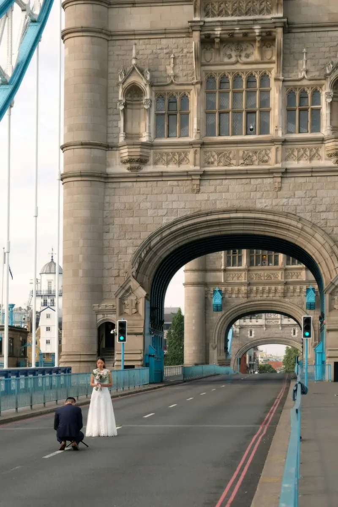
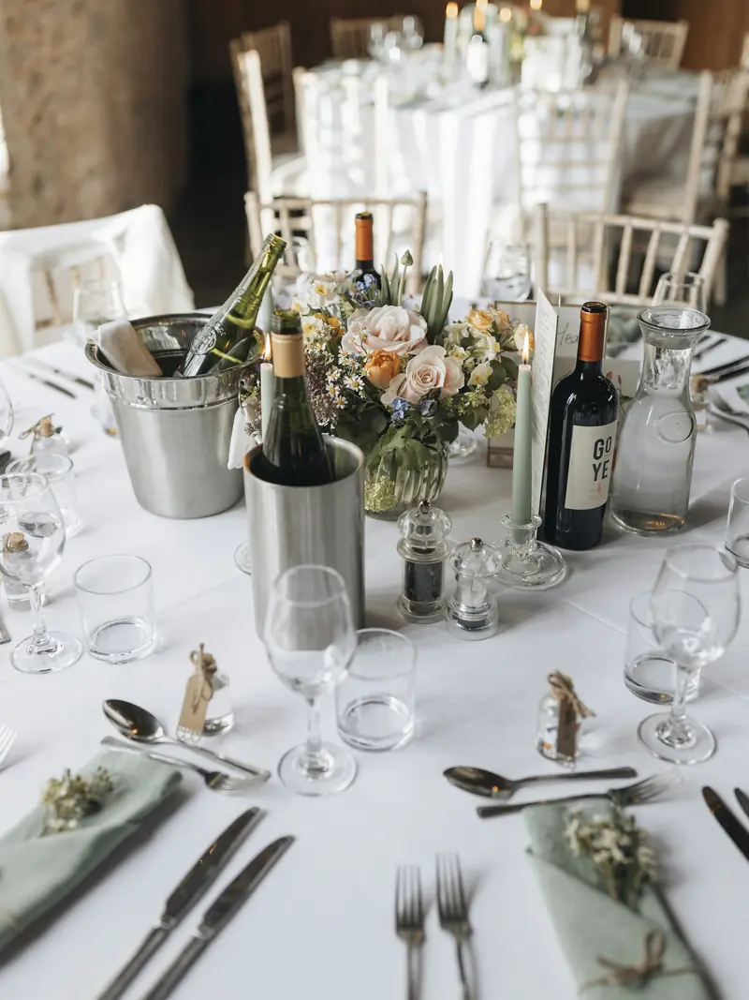

An urban study
City, Softened
London in the background. The two of you in the foreground. A study in texture and quiet moments.


A visual study
This gallery combines credited stock photographs to demonstrate the website’s story experience. It represents a visual direction, rather than a client wedding. View image credits.
Something worth remembering
Let’s start with your date.
A place, a date, a little about the two of you.